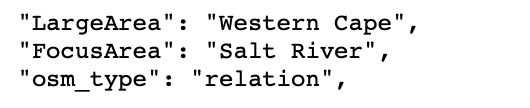
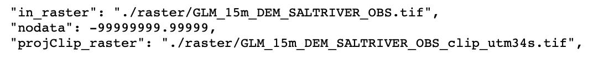
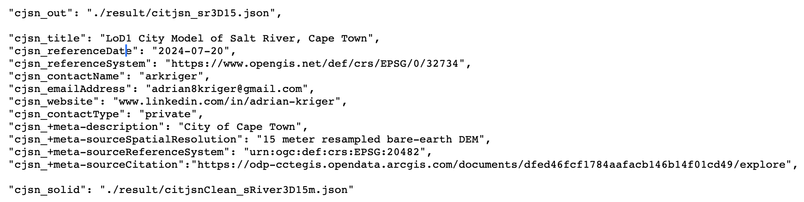
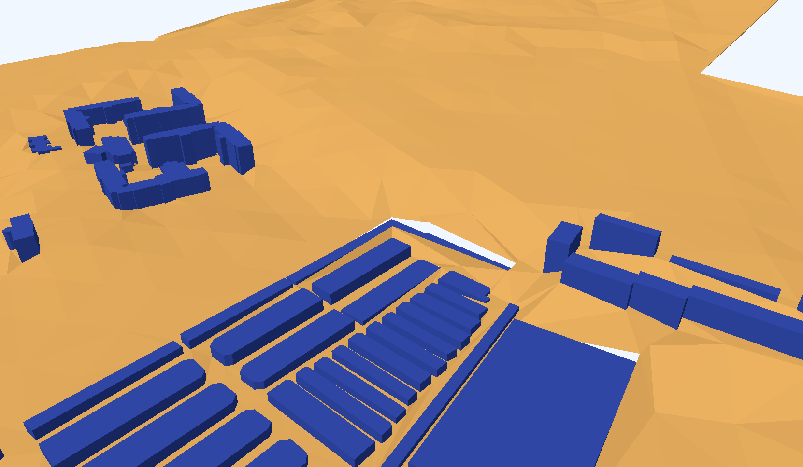
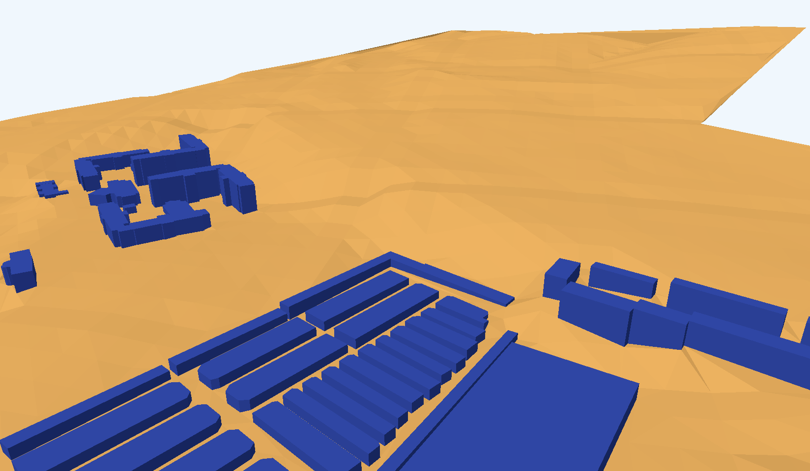
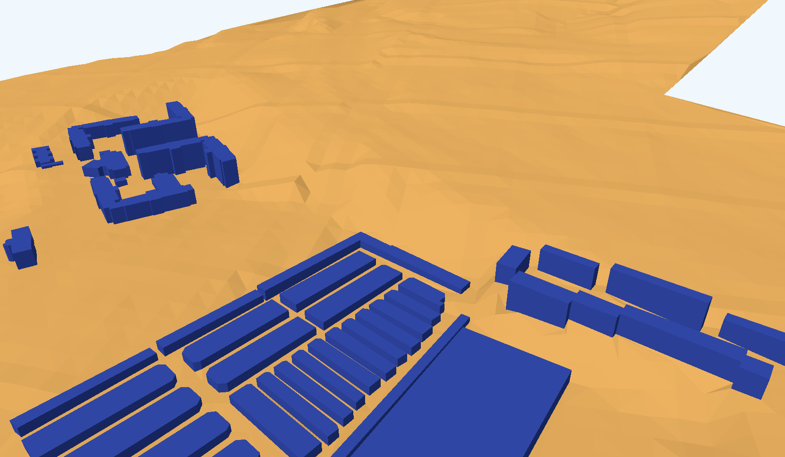
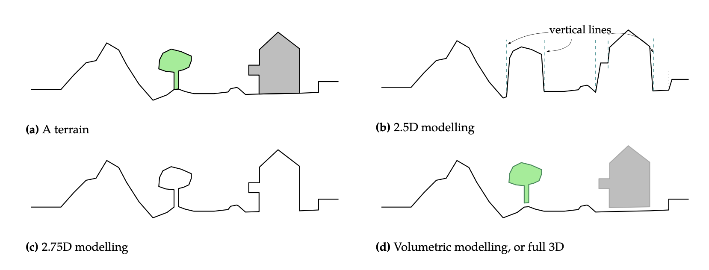
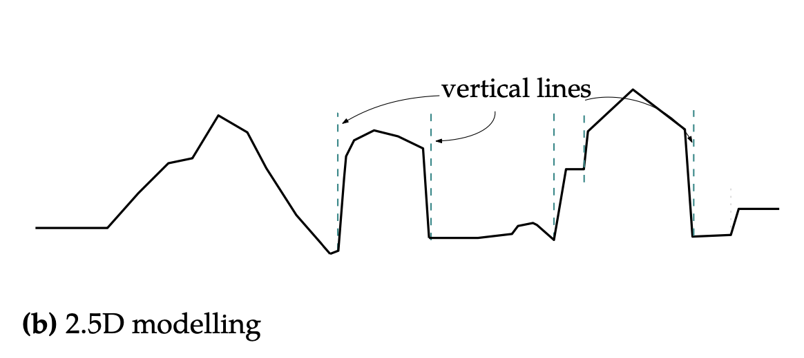
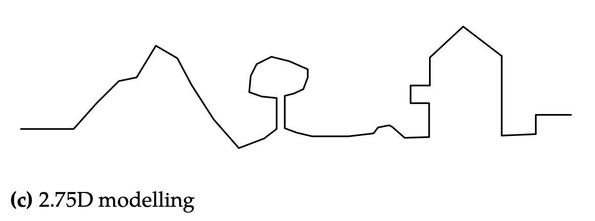
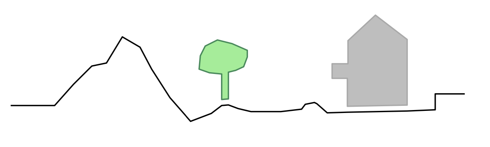

LoD1 Timing and Quality Considerations#

illustrate how different resolution elevation models (25m, 15m and 10m DEM) affect;
1) the quality (holes and completeness) of a LoD1 3D City Model
#- load the magic
import time
from datetime import timedelta
import tempfile
import os
from itertools import chain
import math
import requests
import overpass
import copy
import json
import numpy as np
import pandas as pd
import topojson as tp
import shapely
from shapely.geometry import Point, Polygon, polygon
from shapely.ops import snap, transform
from shapely.strtree import STRtree
import city3D
import pyproj
from osgeo import gdal, ogr, osr
import triangle as tr
from openlocationcode import openlocationcode as olc
import matplotlib.pyplot as plt
Tstart = time.time()
import warnings
warnings.filterwarnings('ignore')
A parameter.json defines the path and files.
#jparams = json.load(open('sRiver_param10m.json')) # was 11 min 30 sec | [2024] 0:05:12.30 | now 0:00:13.49
jparams = json.load(open('sRiver_param15m.json')) # was 5 min 20 sec | [2024] 0:02:24.49 | now 0:00:11.67
#jparams = json.load(open('sRiver_param25m.json')) # was 2 min 13 sec | [2024] 0:01:00.15 | now 0:00:10.57
area of interest |
elevation model |
CityJSON and metadata |
|---|---|---|
 |
 |
 |
#- input OSM PBF file
input_pbf = "./data/CapeTown.osm.pbf"
Lets first harvest the boundary of the area; we want to interogate
#- get the area [suburb]
query = """[out:json][timeout:180];
area[boundary=administrative][name='{0}'] -> .a;
(
way[amenity~'university|research_institute'][name='{1}'](area.a);
relation[place][place~"sub|town|city|count|state|village|borough|quarter|neighbourhood"][name='{1}'](area.a);
);
out geom;
""".format(jparams['LargeArea'], jparams['FocusArea'])
#- execute function from city3D and and return GeoDataFrameLite | home-baked gdf
aoi = city3D.overpass_to_gdf(query)
#- suppose 'aoi' is your GeoDataFrameLite or list of geometries
geoms = aoi['geometry'].tolist()
#- combine all geometries into a single union
combined_geom = shapely.unary_union(geoms) # returns Polygon or MultiPolygon
#- compute bounding box
minx, miny, maxx, maxy = combined_geom.bounds
#extent = [minx - 250, miny - 250,maxx + 250, maxy + 250]
aoi.head(2)
| boundary | name | place | type | wikidata | geometry | osm_id | osm_type | |
|---|---|---|---|---|---|---|---|---|
| 0 | place | Salt River | suburb | boundary | Q2383969 | POLYGON ((18.4575251 -33.9411991, 18.4591488 -... | 2034284 | relation |
Only harvest what we need from the osm.pbf.
start = time.time()
gdal.UseExceptions()
gdal.SetConfigOption("OGR_GEOMETRY_ACCEPT_UNCLOSED_RING", "NO")
#gdal.SetConfigOption("USE_CUSTOM_INDEXING", "NO")
# Input OSM PBF file
#input_pbf = "your_data.osm.pbf"
# GDAL Virtual File System (VSI) to avoid writing to disk
geojson_vsimem = "/vsimem/temp.geojson"
#- GDAL VectorTranslate to extract only buildings & fix geometries
gdal.VectorTranslate(
geojson_vsimem, # Output as in-memory GeoJSON
input_pbf, # Source OSM PBF file
format="GeoJSON", # Output format
layers=["multipolygons"], # Extract only multipolygons
options=["-where", "building IS NOT NULL", "-makevalid",
"-spat", str(minx), str(miny), str(maxx), str(maxy)] # Filter buildings & fix geometries
)
#- load into GeoDataFrameLite | home-baked gdf
gdf = city3D.read_vsimem_geojson(geojson_vsimem)
#- cleanup VSI Memory
gdal.Unlink(geojson_vsimem)
end = time.time()
print('runtime:', str(timedelta(seconds=(end - start))))
ERROR 1: Non closed ring detected.
ERROR 1: Non closed ring detected.
runtime: 0:00:01.919221
gdf.head(2)
| amenity | building | craft | geometry | historic | leisure | man_made | name | office | osm_id | osm_way_id | other_tags | shop | sport | tourism | type | |
|---|---|---|---|---|---|---|---|---|---|---|---|---|---|---|---|---|
| 0 | None | office | None | MULTIPOLYGON (((18.4723433 -33.9288948, 18.472... | None | None | None | Western Cape Metrorail - Infrastructure Building | None | 6383946 | None | "addr:city"=>"Cape Town","addr:postcode"=>"729... | None | None | None | multipolygon |
| 1 | None | hall | None | MULTIPOLYGON (((18.4686004 -33.9360187, 18.468... | None | None | None | None | None | 6691666 | None | "addr:housename"=>"Parish Hall" | None | None | None | multipolygon |
# Convert valid strings, ignore None/NaN
def safe_convert(tag_string):
if isinstance(tag_string, str):
try:
# Replace "=>" with ":" and fix newlines
formatted_string = "{" + tag_string.replace("=>", ":").replace("\n", " ") + "}"
return json.loads(formatted_string) # Parse safely
except json.JSONDecodeError:
return {} # Return empty dict on failure
return {} # Return empty dict if NaN or None
# Apply conversion function
gdf["tags"] = gdf["other_tags"].apply(safe_convert)
# Normalize the 'tags' column to create a new DataFrame
tags_df = pd.json_normalize(gdf['tags'])
# Join the new columns back to the original GeoDataFrame
gdf = pd.concat([gdf, tags_df], axis=1)
# (Optional) Drop the original 'tags' column
gdf = gdf.drop(columns=['other_tags'])
# Ensure a single 'osm_id' column
if 'osm_id' in gdf.columns:
if 'osm_way_id' in gdf.columns:
gdf['osm_id'] = [o if pd.notna(o) else w
for o, w in zip(gdf['osm_id'], gdf['osm_way_id'])]
gdf = gdf.drop(columns=['osm_way_id'])
elif 'osm_way_id' in gdf.columns:
gdf = gdf.rename(columns={'osm_way_id': 'osm_id'})
#gdf = gdf[gdf.geometry.apply(lambda x: x.within(aoi.unary_union))]
gdf = gdf[gdf.geometry.apply(lambda x: x.within(shapely.unary_union(aoi.geometry)))]
gdf.crs = "EPSG:4326"
gdf.head(2)
| amenity | building | craft | geometry | historic | leisure | man_made | name | office | osm_id | ... | diet:vegan | content | industrial | addr:unit | disused | sahra:criterea | opening_date | bus | network | construction | |
|---|---|---|---|---|---|---|---|---|---|---|---|---|---|---|---|---|---|---|---|---|---|
| 0 | None | office | None | MULTIPOLYGON (((18.4723433 -33.9288948, 18.472... | None | None | None | Western Cape Metrorail - Infrastructure Building | None | 6383946 | ... | NaN | NaN | NaN | NaN | NaN | NaN | NaN | NaN | NaN | NaN |
| 7 | None | school | None | MULTIPOLYGON (((18.4615816 -33.9317448, 18.461... | None | None | None | None | None | 13328172 | ... | NaN | NaN | NaN | NaN | NaN | NaN | NaN | NaN | NaN | NaN |
2 rows × 133 columns
ts = gdf[gdf['building'].notna()]
#len(ts)
print('\n', len(ts), "buildings have been harvested from", input_pbf)
1449 buildings have been harvested from ./data/CapeTown.osm.pbf
#ts.head(2)
# basic cleaning to harvest building=* (no building:part=*) and building=levels tags only
#- we only want buildings with =levels data
ts = (
ts.dropna(subset=['building:levels'])
.assign(**{'building:levels': pd.to_numeric(ts['building:levels'], errors='coerce')})
.query("`building:levels` != 0")
)
#- without building:part
#ts = ts[ts['building:part'].isnull()]
ts = ts[ts['building:part'].isnull()] if 'building:part' in ts.columns else ts
#ts = ts.explode()
print('\n\033[1m', jparams['FocusArea'], 'has \033[0m', len(ts), 'buildings')
Salt River has 1377 buildings
#- fill <Projected CRS: EPSG:32734> from above here epsg = EPSG:32734
epsg = 'EPSG:32734'
#project blds
ts = ts.to_crs(epsg)
#project aoi
aoi = aoi.to_crs(epsg)
Create LoD1 3D City Model
aoibuffer = aoi.copy()
def buffer01(row):
with np.errstate(invalid='ignore'):
return row.geometry.buffer(150, cap_style=3, join_style=2)
aoibuffer['geometry'] = aoibuffer.apply(buffer01, axis=1)
#- suppose 'aoi' is your GeoDataFrameLite or list of geometries
geoms = aoibuffer['geometry'].tolist()
#- combine all geometries into a single union
combined_geom = shapely.unary_union(geoms) # returns Polygon or MultiPolygon
#- compute bounding box
minx, miny, maxx, maxy = combined_geom.bounds
extent = [minx - 250, miny - 250,
maxx + 250, maxy + 250]
Now the DEM
one is available at raster
gdal.SetConfigOption("GTIFF_SRS_SOURCE", "GEOKEYS")
gdal.UseExceptions()
# set the path and nodata
OutTile = gdal.Warp(jparams['projClip_raster'],
jparams['in_raster'],
dstSRS=epsg,
srcNodata = jparams['nodata'],
#- dstNodata = 0,
#-- outputBounds=[minX, minY, maxX, maxY]
outputBounds = [extent[0], extent[1], extent[2], extent[3]])
OutTile = None
#- convert raster to XYZ in-memory
#- Virtual in-memory path
xyz_mem_path = "/vsimem/temp_xyz.xyz"
gdal.Translate(xyz_mem_path, jparams['projClip_raster'], format="XYZ")
#0 read XYZ from GDAL's in-memory file
xyz_vsimem = gdal.VSIFOpenL(xyz_mem_path, "rb")
xyz_bytes = gdal.VSIFReadL(1, gdal.VSIStatL(xyz_mem_path).size, xyz_vsimem)
gdal.VSIFCloseL(xyz_vsimem)
#- cleanup in-memory file
gdal.Unlink(xyz_mem_path)
0
prepare to harvest elevation
# set the path to the projected, cliped elevation
src_filename = jparams['projClip_raster']
src_ds = gdal.Open(src_filename)
gt_forward = src_ds.GetGeoTransform()
rb = src_ds.GetRasterBand(1)
Buildings
#- simplify geometry with GeoDataFrameLite | home-baked gdf
ts = city3D.GeoDataFrameLite(ts)
geojson_dict = json.loads(ts.to_json())
for feat in geojson_dict["features"]:
if feat.get("type") is None:
feat["type"] = "multipolygon"
if feat.get("geometry") is None:
feat["geometry"] = {"type":"MultiPolygon","coordinates":[]}
topo = tp.Topology(geojson_dict, prequantize=False, winding_order='CCW_CW')
simplified_geojson = topo.toposimplify(0.25).to_geojson()
ts = city3D.GeoDataFrameLite.from_json(simplified_geojson)
ts.crs = epsg
#- prepare xyz (more buildings = more time)
start = time.time()
# Convert bytes to DataFrame
xyz_str = xyz_bytes.decode("utf-8") # Decode to string
dtype_spec = {
"x": np.float32, # Reduce precision from float64 to float32 (saves memory)
"y": np.float32,
"z": np.float32
}
#df = pd.read_csv(jparams['xyz'], delimiter = ' ', header=None, names=["x", "y", "z"])
df = pd.read_csv(pd.io.common.StringIO(xyz_str), delimiter=" ", header=None,
names=["x", "y", "z"], dtype=dtype_spec) # in memory fastest
#- Create the shapely 'geometry' column directly (Vectorized) and GeoDataFrameLite | home-baked gdf
df['geometry'] = df.apply(lambda row: Point(row['x'], row['y']), axis=1)
gdf = city3D.GeoDataFrameLite(df)
gdf.crs = epsg
# --- cleanup ---
gdf = gdf[gdf['z'] != jparams['nodata']]
gdf.reset_index(drop=True, inplace=True)
gdf = gdf.round(2)
#print(len(gdf))
end = time.time()
print('runtime:', str(timedelta(seconds=(end - start))))
runtime: 0:00:00.540794
Plot
Browse the saved './data/topologyFig' at your leisure
#%matplotlib
#fig, ax = plt.subplots(figsize=(11, 11))
#ts.plot(ax=ax, facecolor='none', edgecolor='purple', alpha=0.2)
#if len(new_df1) > 0:
# new_df1.plot(ax=ax, edgecolor='red', facecolor='none')#, alpha=0.3)#, column='osm_building', legend=True)
#def plot_geometries(df, ax=None, facecolor='none', edgecolor='purple', alpha=0.5):
# if ax is None:
# fig, ax = plt.subplots(figsize=(10,10))
# patches = []
# for geom in df['geometry']:
# if geom is None:
# continue
# if isinstance(geom, Polygon):
# Exterior ring
# patches.append(MplPolygon(list(geom.exterior.coords), closed=True))
# Interiors (holes)
# for interior in geom.interiors:
# patches.append(MplPolygon(list(interior.coords), closed=True))
# elif isinstance(geom, MultiPolygon):
# for poly in geom.geoms:
# patches.append(MplPolygon(list(poly.exterior.coords), closed=True))
# for interior in poly.interiors:
# patches.append(MplPolygon(list(interior.coords), closed=True))
# pc = PatchCollection(patches, facecolor=facecolor, edgecolor=edgecolor, alpha=alpha)
# ax.add_collection(pc)
# ax.autoscale()
# ax.set_aspect('equal')
# return ax
##-- Example usage:
#fig, ax = plt.subplots(figsize=(11, 11))
#plot_geometries(ts_copy, ax=ax, facecolor='none', edgecolor='purple', alpha=0.2)
#if len(new_df1) > 0:
# plot_geometries(new_df1, ax=ax, facecolor='none', edgecolor='red', alpha=0.5)
#-- save
#plt.savefig('./data/topologyFig', dpi=300)
#plt.show()
# -- execute function. write geoJSON
dis = city3D.bldHeights(ts)
start = time.time()
dis_c = dis.copy()
dis_c.drop(dis.index[dis['building'] == 'bridge'], inplace = True)
dis_c.drop(dis.index[dis['building'] == 'roof'], inplace = True)
end = time.time()
print('runtime:', str(timedelta(seconds=(end - start))))
runtime: 0:00:00.002271
dis_c.head(2)
#dis.plot()
| osm_id | address | building | building:levels | building:use | building:flats | building:units | beds | rooms | residential | amenity | social_facility | operator | building_height | min_height | plus_code | footprint | geometry | |
|---|---|---|---|---|---|---|---|---|---|---|---|---|---|---|---|---|---|---|
| 0 | 6383946 | Western Cape Metrorail - Infrastructure Buildi... | office | 1.0 | NaN | NaN | NaN | NaN | NaN | NaN | None | NaN | NaN | 4.1 | 0.0 | 4FRW3FCF+946 | [[(266353.277, 6242850.213), (266357.266, 6242... | POLYGON ((266353.277369 6242850.212725, 266357... |
| 1 | 13328172 | None | school | 2.0 | NaN | NaN | NaN | NaN | NaN | NaN | None | NaN | NaN | 6.9 | 0.0 | 4FRW3F96+6MG | [[(265366.084, 6242509.527), (265364.518, 6242... | POLYGON ((265366.083781 6242509.526659, 265364... |
#-
#- prepare xyz (more buildings = more time)
start = time.time()
# Convert bytes to DataFrame
xyz_str = xyz_bytes.decode("utf-8") # Decode to string
dtype_spec = {
"x": np.float32, # Reduce precision from float64 to float32 (saves memory)
"y": np.float32,
"z": np.float32
}
#df = pd.read_csv(jparams['xyz'], delimiter = ' ', header=None, names=["x", "y", "z"])
df = pd.read_csv(pd.io.common.StringIO(xyz_str), delimiter=" ", header=None,
names=["x", "y", "z"], dtype=dtype_spec) # in memory fastest
#- Create the shapely 'geometry' column directly (Vectorized) and GeoDataFrameLite | home-baked gdf
df['geometry'] = df.apply(lambda row: Point(row['x'], row['y']), axis=1)
gdf = city3D.GeoDataFrameLite(df)
gdf.crs = epsg
# --- cleanup ---
gdf = gdf[gdf['z'] != jparams['nodata']]
gdf.reset_index(drop=True, inplace=True)
gdf = gdf.round(2)
#print(len(gdf))
end = time.time()
print('runtime:', str(timedelta(seconds=(end - start))))
runtime: 0:00:00.528624
The Python code to execute the city3D.functions are in the city3D.py script
#- harvest the building vertices, combine with the elevation, create regions and segments for Triangle
coords, regions, segments = city3D.prepareTri(gdf, dis_c, aoibuffer)
Triangle
A = dict(vertices=np.array(coords), segments=np.array(segments), #holes=np.array(holes),
regions=np.array(regions))
# 'p' = Triangulate the PSLG: Delauney triangulation with segments (building outlines) as constraints.
# 'Y' = Do NOT add Steiner points
# 'A' = Attribute triangles with region IDs
# 'z' = Zero-based indexing (prevents index errors)
Tr = tr.triangulate(A, 'pYAz')
#- the vertices
final_verts_2d = Tr['vertices']
#- round to 3 decimals to match your get_pt_idx rounding
z_cache = {(row.x, row.y): row.z for row in gdf.itertuples()}
## -- we triangulate in 2D and project into 3D space. the vertices of the building outlines need a 'z'-value
final_verts_3d = []
for x, y in final_verts_2d:
x_r, y_r = x, y
# 2. Check if we already have the Z value in our GDF points
if (x_r, y_r) in z_cache:
z = z_cache[(x_r, y_r)]
else:
# 3. Only query the raster if the point is a new vector/Steiner vertex
z = float(city3D.rasterQuery2(x, y, gt_forward, rb))
final_verts_3d.append([x, y, z])
final_verts_3d = np.array(final_verts_3d)
#s- eparate triangles by their Region ID for CityJSON
tris = Tr['triangles']
tri_attr = Tr['triangle_attributes'].flatten()
CityJSON
#-
minz = gdf['z'].min()
maxz = gdf['z'].max()
The Python code to execute the .output_cityjson function is in the city3D.py script
# -- execute function. create CityJSON
crs = epsg[5:]
city3D.output_cityjson(extent, minz, maxz, tris, tri_attr, final_verts_3d, dis, jparams, gt_forward, rb, crs)
src_ds = None
Go over to Ninja the online CityJSON viewer and explore!
Tend = time.time()
print('runtime:', str(timedelta(seconds=(Tend - Tstart))))
runtime: 0:00:14.397089
1. Quality#
Lower resolution Elevation Models can leave gaps!
25m |
 |
Higher resolution Elevation Models do solve the challenge.
15m |
 |
10m |
 |
What do we (in the geospatial community) mean when we say; |
 |
We model terrain (a raster DEM) as a 2D surface imbedded in 3D space. |
 |
To represent a surface ‘truthfully’ we can employ 2.75D modelling. |
 |
Full volumetric 3D modelling, like a 3D City Model, is actually a 2.5D surface including volumetric 3D objects. |
 |
We model terrain seperately from the objects (trees, buildings, etc) connected to it.
We remove the buildings, roads, trees, etc. —we cut them out as we did above– and due to how geo3D creates a city model (terrain modelled seperate from the buildings); the resolution of the raster DEM can create challanges.
The challenge is overcome with a finer resolution elevation model.
In this particular case a 15m DEM easily solves the challange.